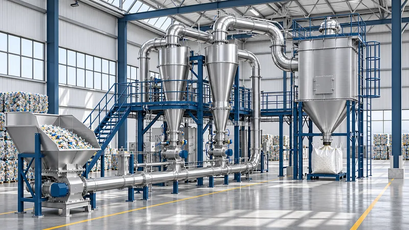
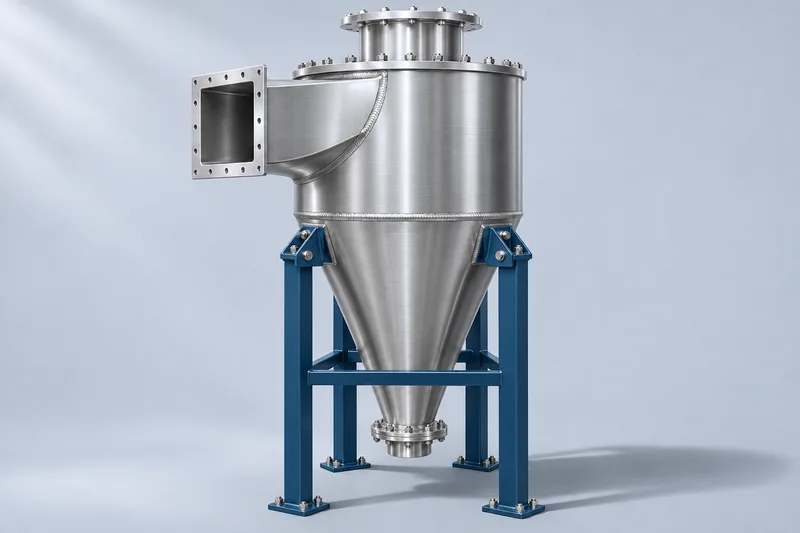

Druk- of vacuümtransport?
Volg het poeder van afnamepunt tot bestemming en vergelijk de rol van overdruk en onderdruk in uw leidingtracé.
Lees artikel: Druk- of vacuümtransport?


Hoe kiest u een transportbocht? Wanneer is een filter aan vervanging toe? Vind de afwegingen, meetgegevens en praktijkvoorbeelden voor uw installatie.

Volg het poeder van afnamepunt tot bestemming en vergelijk de rol van overdruk en onderdruk in uw leidingtracé.
Lees artikel: Druk- of vacuümtransport?
Selecteer een blower of ventilator op luchtdebiet, drukverschil en bedrijfscondities. Vergelijk principes en bereid uw technische selectie voor.
Lees artikel: De juiste blower selecteren?
Onderzoek slijtage in transportbochten. Lees wat de plaats van de slijtage vertelt en wanneer een ander bochttype, wandmateriaal of leidingtracé zin heeft.
Lees artikel: Waarom slijt een transportbocht?
Beoordeel filtervervanging aan de hand van drukverschil, luchtdebiet en lekkage. Van eerste signaal tot gerichte inspectie van uw stoffilter.
Lees artikel: Wanneer vervangt u uw filters?
Wanneer ontlast een cycloon uw stoffilter? Beoordeel de korrelverdeling, stofvracht en beschikbare ventilatordruk met een praktisch rekenvoorbeeld.
Lees artikel: Wanneer loont een cycloon als voorafscheider?
Kies een industriële zeef voor controle of classificatie. Lees hoe u maaswijdte, productverlies en capaciteit beoordeelt in een proef met uw eigen materiaal.
Lees artikel: Controlezeef of fractioneerzeef kiezen?
Een bigbag loopt traag of met stoten leeg. Herken het verschil tussen brugvorming, een geknelde uitloop en een begrenzing in de afvoer.
Lees artikel: Bigbag lossen: waarom hapert de productstroom?
Lees hoe een ontluchtingsfilter werkt bij pneumatisch vullen, waarom de eindfase aandacht vraagt en welke gegevens u nodig hebt voor filterselectie.
Lees artikel: Hoe werkt silo-ontluchting bij pneumatisch vullen?
Kies een doseersluis voor vrije uitloop of invoer in een transportleiding. Vergelijk de productroute, beschikbare inbouwhoogte, capaciteit en lekkagelucht.
Lees artikel: Doorvalsluis of doorblaassluis kiezen?